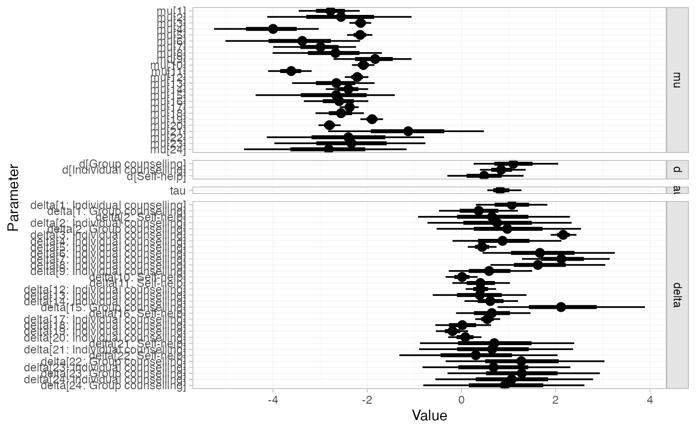
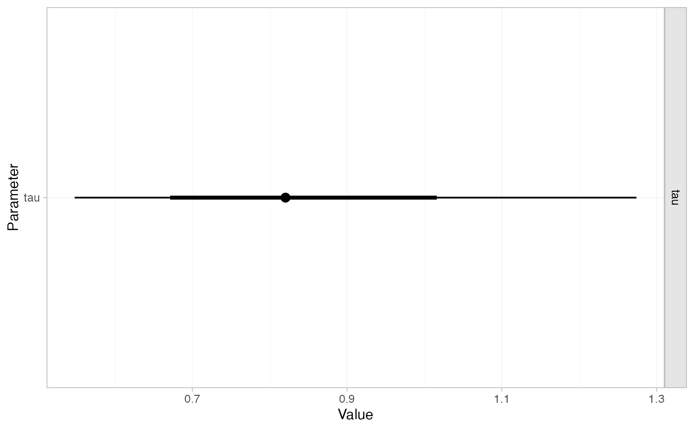
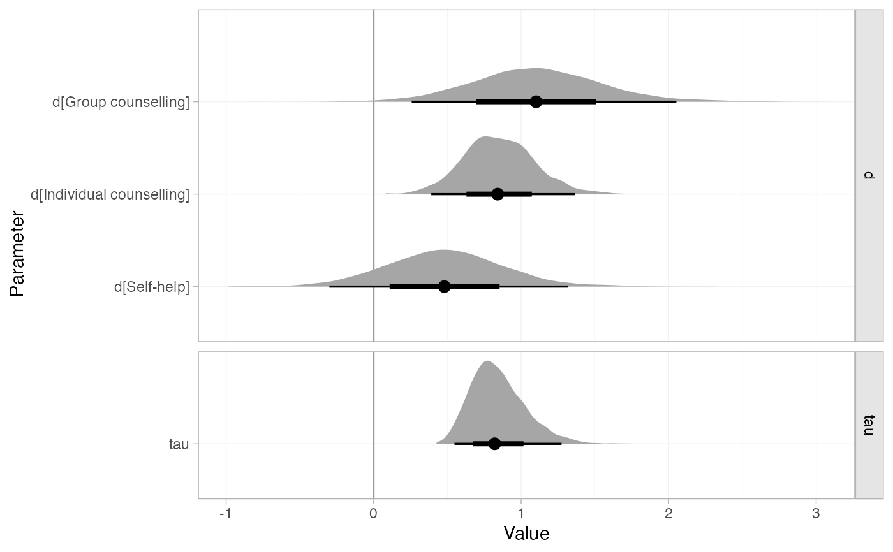

Posterior summaries of model parameters in stan_nma objects may be produced
using the summary() method and plotted with the plot() method. NOTE: To
produce relative effects, absolute predictions, or posterior ranks, see
relative_effects(), predict.stan_nma(), posterior_ranks(),
posterior_rank_probs().
Arguments
- ...
Additional arguments passed on to other methods
- pars, include
See
rstan::extract()- probs
Numeric vector of specifying quantiles of interest, default
c(0.025, 0.25, 0.5, 0.75, 0.975)- x, object
A
stan_nmaobject- stat
Character string specifying the
ggdistplot stat to use, default"pointinterval"- orientation
Whether the
ggdistgeom is drawn horizontally ("horizontal") or vertically ("vertical"), default"horizontal"- ref_line
Numeric vector of positions for reference lines, by default no reference lines are drawn
- summary
Logical, calculate posterior summaries? Default
TRUE.
Value
A nma_summary object
Details
The plot() method is a shortcut for plot(summary(stan_nma)). For
details of plotting options, see plot.nma_summary().
Examples
## Smoking cessation
# \donttest{
# Run smoking RE NMA example if not already available
if (!exists("smk_fit_RE")) example("example_smk_re", run.donttest = TRUE)
# }
# \donttest{
# Summary and plot of all model parameters
summary(smk_fit_RE)
#> mean sd 2.5% 25% 50% 75% 97.5%
#> mu[1] -2.79 0.33 -3.45 -2.99 -2.78 -2.56 -2.16
#> mu[2] -2.57 0.78 -4.12 -3.08 -2.56 -2.05 -1.06
#> mu[3] -2.14 0.12 -2.38 -2.22 -2.14 -2.06 -1.92
#> mu[4] -4.04 0.57 -5.25 -4.40 -4.00 -3.64 -3.03
#> mu[5] -2.16 0.14 -2.43 -2.25 -2.15 -2.06 -1.89
#> mu[6] -3.43 0.71 -5.01 -3.85 -3.38 -2.93 -2.15
#> mu[7] -3.02 0.44 -4.00 -3.29 -2.99 -2.71 -2.24
#> mu[8] -2.72 0.60 -4.01 -3.09 -2.67 -2.31 -1.69
#> mu[9] -1.85 0.42 -2.72 -2.13 -1.83 -1.56 -1.06
#> mu[10] -2.08 0.12 -2.32 -2.16 -2.08 -2.00 -1.85
#> mu[11] -3.62 0.23 -4.10 -3.77 -3.61 -3.46 -3.18
#> mu[12] -2.21 0.13 -2.47 -2.30 -2.21 -2.13 -1.97
#> mu[13] -2.67 0.44 -3.59 -2.96 -2.66 -2.36 -1.84
#> mu[14] -2.41 0.23 -2.88 -2.56 -2.40 -2.25 -1.98
#> mu[15] -2.72 0.75 -4.37 -3.17 -2.66 -2.20 -1.41
#> mu[16] -2.61 0.35 -3.35 -2.83 -2.60 -2.38 -1.98
#> mu[17] -2.38 0.11 -2.58 -2.45 -2.37 -2.30 -2.18
#> mu[18] -2.57 0.26 -3.10 -2.74 -2.56 -2.39 -2.07
#> mu[19] -1.90 0.12 -2.15 -1.98 -1.90 -1.81 -1.67
#> mu[20] -2.80 0.12 -3.03 -2.88 -2.80 -2.72 -2.56
#> mu[21] -1.14 0.84 -2.83 -1.67 -1.13 -0.59 0.47
#> mu[22] -2.41 0.84 -4.13 -2.94 -2.40 -1.85 -0.79
#> mu[23] -2.34 0.82 -3.97 -2.85 -2.34 -1.80 -0.77
#> mu[24] -2.84 0.87 -4.62 -3.38 -2.82 -2.28 -1.16
#> d[Group counselling] 1.11 0.45 0.26 0.82 1.10 1.39 2.05
#> d[Individual counselling] 0.85 0.24 0.39 0.69 0.84 1.01 1.36
#> d[Self-help] 0.48 0.41 -0.30 0.22 0.48 0.74 1.32
#> tau 0.84 0.19 0.55 0.71 0.82 0.95 1.27
#> delta[1: Individual counselling] 1.07 0.38 0.30 0.81 1.07 1.33 1.82
#> delta[1: Group counselling] 0.37 0.43 -0.48 0.08 0.36 0.66 1.20
#> delta[2: Self-help] 0.66 0.81 -0.92 0.12 0.65 1.17 2.30
#> delta[2: Individual counselling] 0.76 0.78 -0.72 0.25 0.75 1.26 2.34
#> delta[2: Group counselling] 0.99 0.78 -0.53 0.48 0.97 1.49 2.54
#> delta[3: Individual counselling] 2.16 0.14 1.89 2.07 2.16 2.26 2.44
#> delta[4: Individual counselling] 0.90 0.59 -0.19 0.51 0.87 1.28 2.12
#> delta[5: Individual counselling] 0.44 0.16 0.13 0.33 0.44 0.54 0.74
#> delta[6: Individual counselling] 1.73 0.72 0.45 1.23 1.66 2.18 3.25
#> delta[7: Individual counselling] 2.15 0.48 1.28 1.82 2.12 2.45 3.15
#> delta[8: Individual counselling] 1.67 0.60 0.61 1.26 1.62 2.04 3.05
#> delta[9: Individual counselling] 0.60 0.46 -0.27 0.28 0.59 0.91 1.50
#> delta[10: Self-help] 0.01 0.17 -0.34 -0.10 0.01 0.12 0.34
#> delta[11: Self-help] 0.41 0.31 -0.19 0.19 0.40 0.62 1.03
#> delta[12: Individual counselling] 0.41 0.16 0.09 0.29 0.41 0.52 0.73
#> delta[13: Individual counselling] 0.38 0.50 -0.61 0.04 0.39 0.72 1.38
#> delta[14: Individual counselling] 0.62 0.29 0.06 0.42 0.61 0.81 1.20
#> delta[15: Group counselling] 2.16 0.78 0.77 1.63 2.11 2.64 3.89
#> delta[16: Self-help] 0.65 0.40 -0.11 0.38 0.64 0.92 1.47
#> delta[17: Individual counselling] 0.55 0.14 0.29 0.46 0.55 0.64 0.82
#> delta[18: Individual counselling] 0.03 0.30 -0.56 -0.18 0.02 0.23 0.63
#> delta[19: Individual counselling] -0.19 0.17 -0.54 -0.31 -0.19 -0.07 0.14
#> delta[20: Individual counselling] 0.08 0.18 -0.28 -0.05 0.08 0.20 0.42
#> delta[21: Self-help] 0.71 0.84 -0.88 0.14 0.70 1.26 2.39
#> delta[21: Individual counselling] 0.67 0.82 -0.90 0.13 0.65 1.19 2.37
#> delta[22: Self-help] 0.31 0.83 -1.32 -0.23 0.30 0.84 2.04
#> delta[22: Group counselling] 1.29 0.84 -0.34 0.73 1.27 1.82 3.03
#> delta[23: Individual counselling] 0.69 0.80 -0.83 0.17 0.68 1.19 2.31
#> delta[23: Group counselling] 1.29 0.82 -0.30 0.73 1.28 1.81 2.94
#> delta[24: Individual counselling] 1.08 0.84 -0.55 0.53 1.06 1.60 2.79
#> delta[24: Group counselling] 0.93 0.86 -0.81 0.39 0.92 1.49 2.61
#> Bulk_ESS Tail_ESS Rhat
#> mu[1] 4590 2925 1
#> mu[2] 2214 2436 1
#> mu[3] 6188 2999 1
#> mu[4] 4384 2805 1
#> mu[5] 5672 2684 1
#> mu[6] 2396 2525 1
#> mu[7] 3147 2348 1
#> mu[8] 2877 2273 1
#> mu[9] 3595 2891 1
#> mu[10] 7641 2823 1
#> mu[11] 6179 2509 1
#> mu[12] 5482 2965 1
#> mu[13] 4097 3058 1
#> mu[14] 6018 3042 1
#> mu[15] 2855 2771 1
#> mu[16] 6421 2840 1
#> mu[17] 7070 3056 1
#> mu[18] 5311 3032 1
#> mu[19] 7163 2727 1
#> mu[20] 6043 2871 1
#> mu[21] 1983 2239 1
#> mu[22] 1983 2506 1
#> mu[23] 2308 2240 1
#> mu[24] 2378 2126 1
#> d[Group counselling] 1541 2173 1
#> d[Individual counselling] 985 1773 1
#> d[Self-help] 1483 1676 1
#> tau 1116 1643 1
#> delta[1: Individual counselling] 4444 2977 1
#> delta[1: Group counselling] 4521 3317 1
#> delta[2: Self-help] 2303 2770 1
#> delta[2: Individual counselling] 2276 2219 1
#> delta[2: Group counselling] 2177 2440 1
#> delta[3: Individual counselling] 5196 3302 1
#> delta[4: Individual counselling] 4206 2858 1
#> delta[5: Individual counselling] 5579 2671 1
#> delta[6: Individual counselling] 2514 2146 1
#> delta[7: Individual counselling] 2916 2385 1
#> delta[8: Individual counselling] 2762 2273 1
#> delta[9: Individual counselling] 3401 2974 1
#> delta[10: Self-help] 5309 3726 1
#> delta[11: Self-help] 5094 3499 1
#> delta[12: Individual counselling] 5054 3323 1
#> delta[13: Individual counselling] 3808 3292 1
#> delta[14: Individual counselling] 5610 3196 1
#> delta[15: Group counselling] 2314 2445 1
#> delta[16: Self-help] 5100 2472 1
#> delta[17: Individual counselling] 5720 3388 1
#> delta[18: Individual counselling] 5030 3304 1
#> delta[19: Individual counselling] 5312 3522 1
#> delta[20: Individual counselling] 4661 3358 1
#> delta[21: Self-help] 2015 2081 1
#> delta[21: Individual counselling] 1958 1668 1
#> delta[22: Self-help] 1886 2683 1
#> delta[22: Group counselling] 1992 2688 1
#> delta[23: Individual counselling] 2359 2273 1
#> delta[23: Group counselling] 2368 2413 1
#> delta[24: Individual counselling] 2354 2203 1
#> delta[24: Group counselling] 2466 2463 1
plot(smk_fit_RE)

# Summary and plot of heterogeneity tau only
summary(smk_fit_RE, pars = "tau")
#> mean sd 2.5% 25% 50% 75% 97.5% Bulk_ESS Tail_ESS Rhat
#> tau 0.84 0.19 0.55 0.71 0.82 0.95 1.27 1116 1643 1
plot(smk_fit_RE, pars = "tau")

# Customising plot output
plot(smk_fit_RE,
pars = c("d", "tau"),
stat = "halfeye",
ref_line = 0)

# }